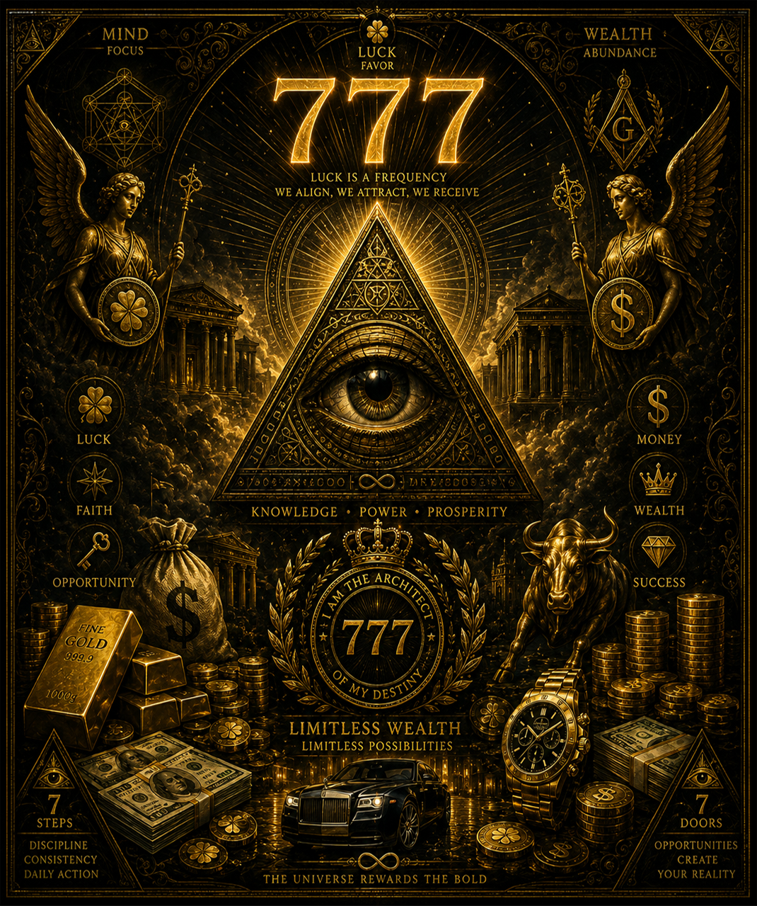

777 · Otra opción para tu patrimonio
¿A quién dejar tu herencia sin herederos? 777 ofrece otra opción para tu patrimonio cuando no tienes herederos claros — no banco, no ONG. Contacto: thisgate777@gmail.com